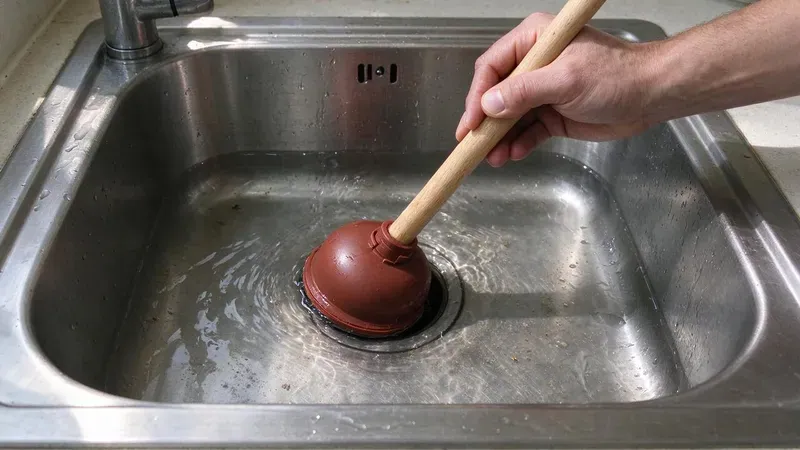

Why Kitchen Sinks Back Up
The kitchen drain takes more abuse than any other drain in the house. Grease and starch wash down warm, then cool and cling to the inside of the pipe. Over a year or two that coating narrows a 1-1/2 inch drain line down to roughly the width of your finger. Then one big rinse finds the limit.
The Usual Causes
Grease is the main one. Bacon fat and butter turn solid as they cool. Running hot water after pouring grease only pushes it a few feet further, where it sets up in the horizontal run behind the wall. Wipe pans with a paper towel first.
Garbage disposals grind food, but they do not make it disappear. Eggshells and coffee grounds sink into the trap and pack like sand. Fibrous stuff such as celery and corn husks wraps around the disposal blades or forms a thick mat down in the trap. Pasta and rice swell after they go down.
Water in much of New Hampshire is soft and often slightly acidic, which can slowly corrode copper pipe and cause pinhole leaks.
Hard water leaves scale inside older galvanized and cast iron drains, and that rough surface catches grease faster than smooth PVC. A lot of homes built before the 1970s still have a galvanized drain arm behind the kitchen sink. Those pipes rust closed from the inside. No amount of drain cleaner will open them back up for long.
Dishwasher and Disposal Connections
A sink that backs up when the dishwasher drains is a clue. The dishwasher pushes several gallons fast, and a partial clog downstream sends it right back up into the sink basin. A new disposal with the knockout plug still in place will do the same thing. Check that first after a disposal swap.
Keeping the Line Clear
Prevention here is cheap. Keep a can for grease and toss it in the trash once it hardens. Use plenty of cold water with the disposal, and let it run about 15 seconds after the motor quiets down. A basket strainer catches the rest.
Once a month, flush the line. Fill the sink with hot water and release it all at once. The sudden volume scours the trap and the drain arm behind the wall much better than a running faucet ever will. Skip boiling water if you have PVC drains, since repeated boiling water can soften the joints. Hot tap water is plenty.
Quick Fixes for a Minor Clog
Start with a cup plunger, not the flange type used on toilets. With a double bowl, block the second drain with a stopper or wet rag so the pressure goes toward the clog instead of out the other side. Give it ten to fifteen hard strokes. Leave the dishwasher off until it drains.
Next, pull the trap. Put a bucket under it, loosen the two slip nuts by hand, and clean the U-bend out. A lot of clogs are right there, in the first foot of pipe. A clean trap means the clog is in the wall, and a quarter-inch hand auger is the next tool to reach for.
Skip chemical drain cleaners. Most will not cut through grease, and when they fail they sit in the trap. That leaves caustic water for whoever opens the line next, and it can damage older metal drains and the finish on some sinks. Enzyme cleaners are fine for maintenance.
When to Bring in a Plumber
Water rising in another fixture changes things. A tub that gurgles or a floor drain that bubbles as the sink drains puts the blockage in the main line rather than the kitchen branch. Clearing it calls for a drain machine run through a cleanout, or a jetter if grease is heavy. Do not keep running water.
Our techs at FVR Plumbing clear kitchen lines all over New Hampshire, and a typical kitchen clog takes about an hour. We will run a camera if the line clogs again within a few months. The office number is (844) 442-1569. It helps to know if the disposal or dishwasher was running when the water came up.
Need a licensed plumber in New Hampshire?
FVR Plumbing answers 24/7 and offers same-day service across New Hampshire.